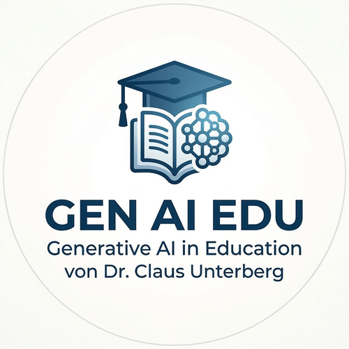
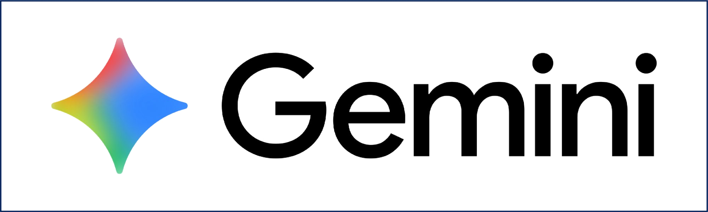
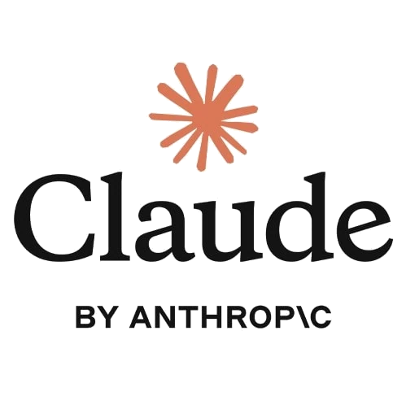

KI als Sparringspartner, nicht als Ghostwriter
Schülerinnen und Schüler sollen KI nutzen, um Ideen zu entwickeln und Argumente zu prüfen – nicht um fertige Texte zu übernehmen.
Konkrete Tipps für den Einsatz von KI-Werkzeugen, Hinweise auf aktuelle Forschung und ein Portal für den kollegialen Austausch. Kein Hype – sondern fundierte Praxis.

Auf eine Karte klicken für mehr Details und konkrete Literaturverweise aus der aktuellen Fachdidaktik.
Schülerinnen und Schüler sollen KI nutzen, um Ideen zu entwickeln und Argumente zu prüfen – nicht um fertige Texte zu übernehmen.
Der produktive Einsatz von KI im Unterricht erfordert eine klare Rollenzuweisung: KI als Gesprächspartner, nicht als Automat für Fertiglösungen. Wenn Schülerinnen und Schüler lernen, KI aktiv zu befragen, Antworten zu hinterfragen und eigene Positionen zu entwickeln, entsteht ein kognitiv anspruchsvoller Prozess, der dem bloßen Kopieren weit überlegen ist.
Bewährt hat sich das sogenannte „Socratic Prompting": Die KI wird nicht um eine Antwort gebeten, sondern um Rückfragen, die den eigenen Denkprozess vertiefen. Auch die Methode des „Steelmanning" – die KI formuliert das stärkste Gegenargument zur eigenen Position – fördert kritisches Denken erheblich.
Ein guter Prompt ist keine Trivialität. Im Unterricht lohnt es sich, Schritt für Schritt zu zeigen, wie man eine KI-Anfrage präzisiert.
Prompt Engineering ist eine Schlüsselkompetenz im Umgang mit KI – und zugleich ein hervorragender Anlass, über Sprache, Präzision und Kommunikation nachzudenken. Ein schlecht formulierter Prompt liefert nichtssagende Ergebnisse; ein präziser Prompt zeigt, dass man verstanden hat, was man eigentlich wissen will.
Im Unterricht empfiehlt sich ein strukturiertes Vorgehen: Zunächst formulieren Schülerinnen und Schüler einen ersten Prompt, analysieren dann gemeinsam, warum die Antwort unbefriedigend ist, und verbessern die Anfrage iterativ. Elemente eines guten Prompts sind: Kontext (wer fragt?), Aufgabe (was soll getan werden?), Format (wie soll die Antwort aussehen?) und Einschränkungen (was soll ausgeschlossen werden?).
KI-Systeme halluzinieren. Aufgaben, bei denen KI-Ausgaben überprüft und korrigiert werden müssen, sind hervorragende Übungen für Quellenkritik.
Large Language Models erzeugen plausibel klingende Texte – auch dann, wenn die enthaltenen Fakten falsch sind. Dieses Phänomen, bekannt als „Halluzination", ist kein Fehler, der behoben werden kann, sondern eine strukturelle Eigenschaft dieser Systeme. Schülerinnen und Schüler müssen lernen, KI-Ausgaben grundsätzlich als Hypothesen zu behandeln, die Überprüfung erfordern.
Didaktisch lassen sich daraus produktive Aufgabenformate ableiten: Schülerinnen und Schüler erhalten absichtlich fehlerhafte KI-Ausgaben und müssen Fehler identifizieren, begründen und korrigieren. Diese Übung schult nicht nur den Umgang mit KI, sondern auch allgemeine Kompetenzen der Informationsevaluation und des wissenschaftlichen Arbeitens.
Klare Absprachen im Kurs: Wann und wie darf KI eingesetzt werden? Schülerinnen und Schüler sollten KI-Nutzung dokumentieren.
Der Einsatz von KI im schulischen Kontext wirft grundlegende Fragen der Leistungsbewertung auf: Wer hat eigentlich geleistet? Die unklare Grenze zwischen eigener Arbeit und KI-Unterstützung führt zu Vertrauensverlust und Frustration – bei Lehrkräften wie bei Schülerinnen und Schülern, die redlich arbeiten.
Die Lösung liegt nicht im Verbot, sondern in transparenten Vereinbarungen: KI-Nutzung wird explizit deklariert, ähnlich wie die Nutzung anderer Hilfsmittel. Schülerinnen und Schüler führen ein kurzes Protokoll, welche KI-Werkzeuge sie wie eingesetzt haben. Diese Reflexion ist selbst ein Lernziel.
Auf Schulebene empfehlen sich schriftlich fixierte KI-Leitlinien, die Fächer, Jahrgangsstufen und Aufgabentypen differenziert regeln. Internationale Erfahrungen zeigen, dass schulweite Konzepte deutlich besser funktionieren als individuelle Lösungen einzelner Lehrkräfte.
KI kann individuelle Erklärungen auf verschiedenen Niveaustufen liefern – hilfreich bei Verständnislücken.
Eine der größten Herausforderungen im Unterricht ist die Heterogenität der Lerngruppen. KI bietet hier ein realistisches Potenzial zur Unterstützung: Schülerinnen und Schüler können sich Inhalte auf ihrem individuellen Niveau erklären lassen, Beispiele aus ihrem Erfahrungsbereich einfordern oder Aufgaben schrittweise bearbeiten, ohne dass die Lehrkraft für jeden Schritt verfügbar sein muss.
Besonders wirksam ist der Einsatz von KI als „Erklärer auf Abruf": Wenn ein Schüler oder eine Schülerin einen Begriff nicht versteht, kann er oder sie eine Erklärung in eigenen Worten, mit Analogien oder auf verschiedenen Abstraktionsniveaus anfordern. Das entlastet die Lehrkraft und fördert die Selbstständigkeit.
Zu beachten ist, dass KI-gestützte Differenzierung didaktisch eingebettet sein muss. Kovanović et al. (2023) zeigen, dass adaptive KI-Systeme nur dann Lernerfolge steigern, wenn sie in einen strukturierten Lernprozess eingebettet sind und Reflexionsphasen enthalten.
Bei KI-gestützten Aufgaben verschiebt sich der Bewertungsfokus. Portfolios und Reflexionsprotokolle machen den Umgang mit KI sichtbar.
Wenn KI jederzeit brauchbare Texte, Lösungen und Zusammenfassungen produzieren kann, verlieren klassische Leistungsnachweise an Aussagekraft. Klausuren, die reines Reproduzieren oder einfaches Anwenden prüfen, können durch KI unterlaufen werden. Die Frage ist nicht, wie man das verhindert, sondern wie man Kompetenzen bewertet, die KI nicht ersetzen kann.
Dazu gehören: kritisches Urteilsvermögen, die Fähigkeit zur Reflexion des eigenen Lernprozesses, mündliche Verteidigung von Ergebnissen und das Erkennen der Grenzen von KI-Ausgaben. Bewährte Formate sind Lernportfolios mit Prozessdokumentation, mündliche Prüfungen und Aufgaben, die lokales oder personales Wissen erfordern.
Researchers wie Boud & Dawson (2023) argumentieren, dass KI-resistente Aufgaben nicht primär auf Kontrolle abzielen sollten, sondern auf den Aufbau von Kompetenzen, die langfristig wertvoll sind – unabhängig davon, welche Werkzeuge verfügbar sind.
Datenschutz, Bias, Verantwortung – diese Fragen gehören in den Unterricht.
KI-Systeme sind keine neutralen Werkzeuge. Sie sind auf der Basis menschlich erzeugter Daten trainiert und reproduzieren deshalb auch gesellschaftliche Vorurteile, Ungleichheiten und Machtstrukturen. Schülerinnen und Schüler, die KI unkritisch nutzen, übernehmen diese Verzerrungen möglicherweise unbemerkt.
Im Unterricht lohnt es sich, konkrete Beispiele zu analysieren: Welche Gruppen sind in KI-Trainingsdaten unterrepräsentiert? Was bedeutet es, wenn eine KI bestimmte Berufe automatisch mit bestimmten Geschlechtern verbindet? Wer trägt die Verantwortung für Entscheidungen, die auf KI-Empfehlungen basieren?
Darüber hinaus sind Datenschutzfragen im Schulkontext unmittelbar relevant: Welche Daten werden an KI-Dienste übermittelt? Welche Bedingungen gelten für Minderjährige? Die EU-KI-Verordnung (AI Act, 2024) setzt hier neue rechtliche Rahmen, die auch für den schulischen Einsatz von Bedeutung sind.
Feste „KI-Phasen" schützen vor unkritischer Abhängigkeit: erst selbst denken, dann KI befragen.
Der ad-hoc-Einsatz von KI – wann immer etwas nicht sofort klar ist – birgt die Gefahr, dass Schülerinnen und Schüler kognitive Anstrengung systematisch vermeiden. Das ist keine Faulheit, sondern eine natürliche Reaktion auf ein verfügbares Hilfsmittel. Didaktisch muss dem entgegengesteuert werden.
Bewährt haben sich feste Phasenstrukturen: In einer ersten Phase bearbeiten Schülerinnen und Schüler ein Problem eigenständig und dokumentieren, wo sie nicht weiterkommen. Erst in einer zweiten Phase darf KI konsultiert werden – mit der Aufgabe, die KI-Antwort kritisch zu bewerten und in eigene Worte zu fassen. Diese Struktur schützt den Lernprozess, ohne KI zu verbannen.
Die Forschung von Bastani et al. (2023) zeigt eindrücklich, was passiert, wenn diese Phasentrennung fehlt: Schülerinnen und Schüler, die KI ohne Einschränkungen nutzen, erreichen kurzfristig bessere Ergebnisse, schneiden aber bei späteren Tests ohne KI deutlich schlechter ab als eine Kontrollgruppe.
Eine mit NotebookLM erstellte Präsentation zu Möglichkeiten der KI-Integration – zugleich ein Praxisbeispiel.
ÖffnenPraktische Tipps zum Einsatz von KI im Unterricht – von Vorbereitung bis Bewertung.
ÖffnenVerständliche Erklärung, wie ein Large Language Model funktioniert – auch ohne technischen Hintergrund lesbar.
ÖffnenVergleichende Analyse der Auswirkungen von KI auf Lernprozesse und Berufsfelder in Deutschland 2025.
ÖffnenSchritt-für-Schritt-Anleitung zur Entwicklung eigener Web-Apps mit KI – auch ohne Programmierkenntnisse.
ÖffnenErstellung professioneller Dokumente mit LaTeX und KI – von Installation bis zur fertigen Klausur.
ÖffnenKontrollierte Feldstudie: KI-Unterstützung verbessert kurzfristig die Leistung, senkt aber den Lernerfolg bei späteren Tests ohne KI.
Zum SSRN PreprintChancen für adaptives Feedback und Differenzierung, aber auch Risiken durch Kompetenzatrophie.
Zum Artikel (Tech Know Learn)Randomisierte Kontrollstudie: Kurzfristig bessere Texte, aber schwächere eigenständige Schreibleistung bei Folgeaufgaben.
Zum NBER Working PaperBei strukturiertem Einsatz mit Reflexionspflichten signifikante Lerngewinne. Entscheidend war die didaktische Einbettung.
Zur ACM Digital LibraryRepräsentative Befragung: Hohes Interesse, aber erhebliche Unsicherheit bezüglich Leistungsbewertung und Datenschutz.
Zum Waxmann VerlagKonkrete Unterrichtsszenarien: von simulierten Expertengesprächen bis zu adaptivem Selbsttest.
Zum SSRN
Multimodale Power & nahtlose Workspace-Integration.
Kapazität: Mit einem Kontextfenster von 1 Million Token kann Gemini ganze Lehrbücher oder komplette Kursunterlagen gleichzeitig analysieren.
Bilderstellung: Nutzt das fortschrittliche Modell Nano Banana 2. Dieses ist besonders optimiert für fotorealistische Assets und hochpräzise technische Skizzen.
Unterrichtseinsatz: Ideal für die Analyse großer Datensätze und die direkte Erstellung von Materialien in Google Docs und Drive.

Der Spezialist für Textanalyse, Logik und LaTeX.
Modellvarianten: Mit Opus 4.6 für höchste kognitive Anforderungen und Sonnet 4.6 für schnelle, präzise Analysen setzt Anthropic Maßstäbe.
LaTeX-Spezialisierung: Claude verfügt über die beste Unterstützung für wissenschaftlichen Satz. Besonderes Feature: Er kann mit TikZ-Code komplexe technische Zeichnungen selbst erstellen und nahtlos integrieren.
Hinweis: Claude bietet keine native Bildgenerierung an, brilliert dafür aber bei strukturiertem Code und tiefgehender Literaturanalyse.
Vielseitiger Allrounder mit neuem „Thinking"-Modus.
Thinking-Modus: Das neue Modell kann „nachdenken", bevor es antwortet. Dies ist besonders hilfreich bei komplexen mathematischen Problemen oder physikalischen Herleitungen.
Bilder: Integriert ebenfalls Nano Banana 2 für kreative Visualisierungen und Illustrationen auf höchstem Niveau.
Klausuren: Sehr starke Unterstützung bei der Erstellung von LaTeX-Klausurvorlagen und Arbeitsblättern.
Quellenbasierte Wissensarbeit & Audio-Overviews.
Abonnement: NotebookLM Plus ist vollständig im Gemini Advanced Abonnement enthalten.
Output: Erstellt basierend auf hochgeladenen Quellen (PDF, Drive) Audio-Podcasts und interaktive Video-Zusammenfassungen.
Lernhilfe: Perfekt für Facharbeiten zur Erstellung von Mindmaps, Quizzen und Glossaren direkt aus den eigenen Materialien.
Interaktive Simulationen und kleine Lern-Apps lassen sich heute ohne Programmierkenntnisse erstellen – direkt im Chat mit Claude oder Gemini. Das Ergebnis ist stets eine einzelne HTML-Datei, die sofort im Browser läuft.
Fertige Apps lassen sich kostenlos über GitHub Pages veröffentlichen – als direkter Link, den Schülerinnen und Schüler auf jedem Gerät aufrufen können. Der Ablauf in Kurzform: Konto erstellen → neues Repository anlegen → HTML-Datei hochladen → unter Settings → Pages den Branch aktivieren → fertig.
Animierte Planetenbahnen mit Umschalter zwischen dem geozentrischen und heliozentrischen Modell. Die Epizykel werden in Echtzeit aufgezeichnet.
Simulation öffnen3D-Würfelsimulation. Modelliert den statistischen Charakter des radioaktiven Zerfalls – wahlweise mit W6, 2×W6 (Gauß-Verteilung) oder W20.
Simulation öffnenSimulation der Kathodenstrahlröhre mit einstellbarer Spannung, Plattenabstand und Driftstrecke. Berechnet die Ablenkung in Echtzeit.
Simulation öffnenTeilchensimulation des chemischen Gleichgewichts. Zeigt, wie sich Hin- und Rückreaktionsrate auf die Gleichgewichtslage auswirken.
Simulation öffnenKI-generierte Web-App. Schülerinnen und Schüler lösen Energieaufgaben in einem spielerischen Quiz-Format – direkt im Browser, ohne Installation.
App starten
Angaben gemäß § 5 TMG
Dr. Claus Unterberg
Gymnasium Thomaeum
Am Gymnasium 4
47906 Kempen
Kontakt
E-Mail: claus.unterberg@thomaeum.de
Hinweis
Diese Webseite ist ein privates, nicht-kommerzielles Angebot zur Unterstützung von Lehrkräften im Umgang mit KI-Werkzeugen. Sie steht in keinem offiziellen Zusammenhang mit dem Gymnasium Thomaeum oder dem Land Nordrhein-Westfalen.
Verantwortlicher
Dr. Claus Unterberg (siehe Impressum)
Hosting
Diese Seite wird über GitHub Pages gehostet. GitHub kann beim Aufruf technische Daten verarbeiten. Weitere Infos: GitHub Privacy Statement.
Keine Cookies, kein Tracking
Diese Seite setzt selbst keine Cookies und verwendet keine Analyse-Tools. Eine Datenweitergabe an Dritte (wie Google Fonts oder externe Skripte) findet nicht statt.